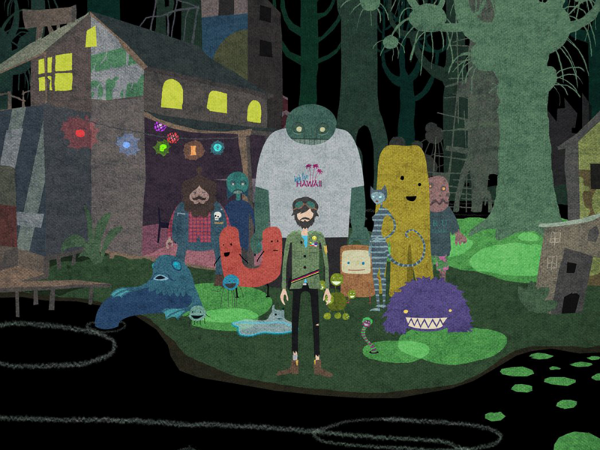
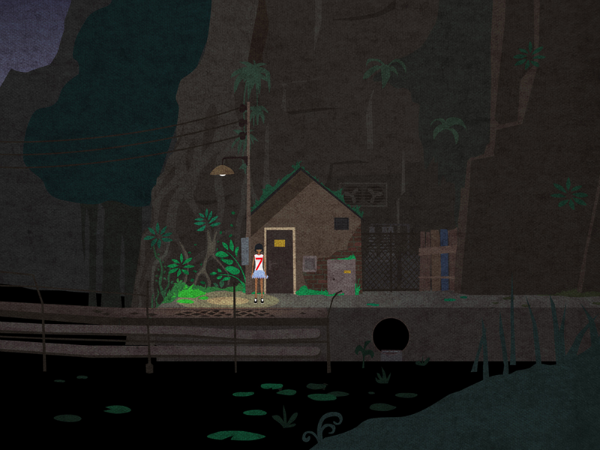
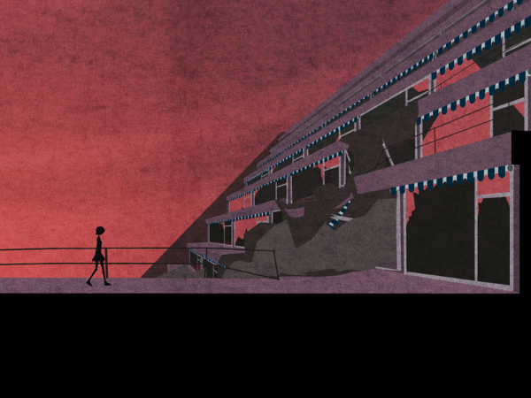
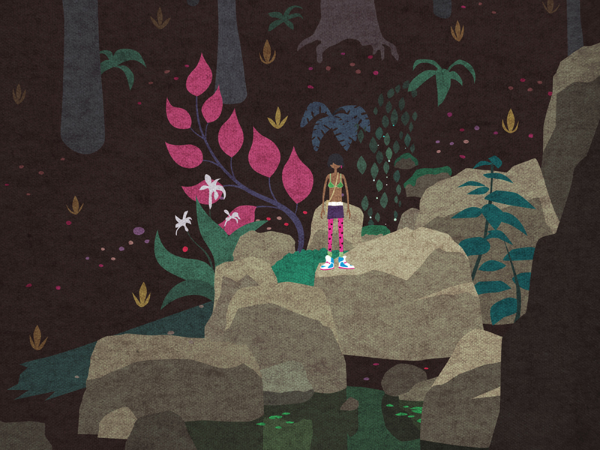

Something to keep an eye out for from the folks at the Copenhagen Game Collective.




Mutatione is a 2D platform adventure / Swamp Opera with a strong focus on exploration, unique characters and personal relationships. The player controls Kay, who strands in a strange isolated world inhabited by friendly mutants and dangerous creatures. Evidently this world grew out of the ruins of a lost civilization, which appears to be our own.